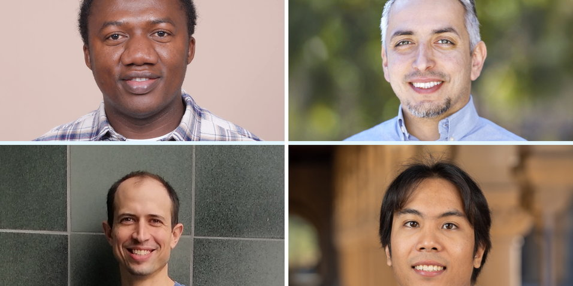
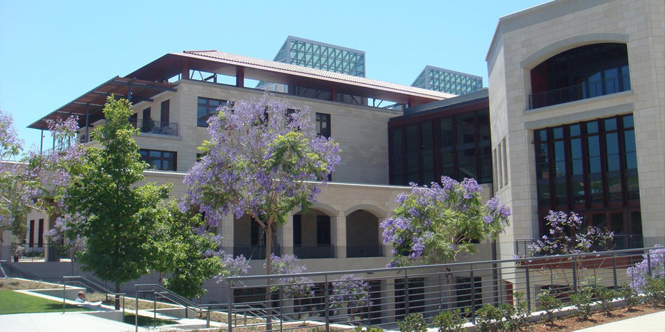
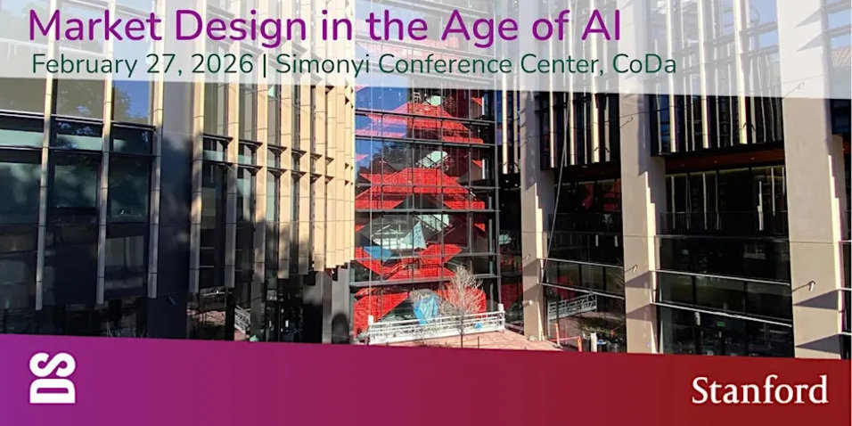
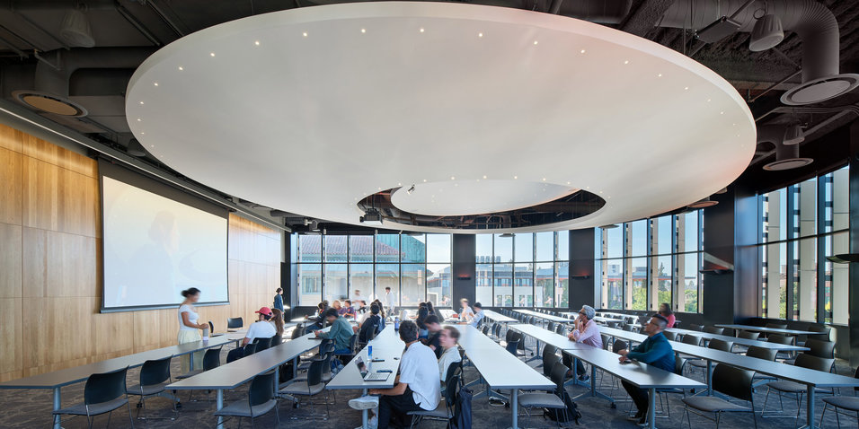
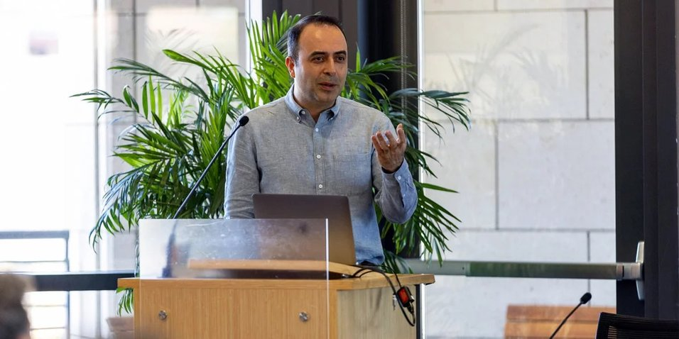

Recent News

Amin Saberi is honored with the ACM SIGecom Test of Time Award for both 2024 and 2025, recognizing his foundational contributions to algorithmic economics.

Juliane Begenau and Shoshana Vasserman have been named 2026 Sloan Research Fellows, recognizing their outstanding early-career research in economics.

Itai Ashlagi wins the Lanchester Prize, one of the most prestigious honors in operations research, for his landmark work on matching markets.

Aviad Rubinstein has been awarded a Sloan Research Fellowship for his contributions to computational complexity theory and mechanism design.
Ellen Vitercik has been selected as an AI2050 Early Career Fellow for her work on learning-theoretic foundations of algorithm design.

One-year postdoctoral fellowship supported by the Stanford Center on Computational Market Design, open to researchers in computer science, economics, or operations research.

Exploring how AI reshapes market design—uniting economists, computer scientists, and industry leaders to build smarter, fairer marketplaces.

A reading group exploring foundational aspects of real-world machine learning, meeting Thursdays 5:00–6:00 PM PT in CoDa E201.

The new center will bring interdisciplinary expertise to bear on crafting rules and procedures for creating and improving markets.